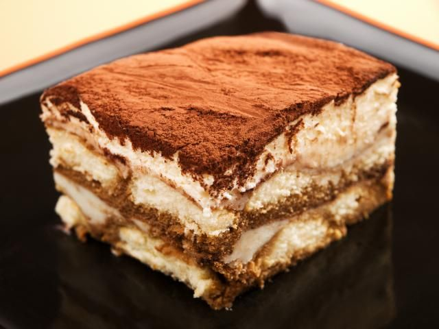

<!DOCTYPE hmtl>
<html lang="en">
</html>

<head>
	<meta charset="utf-8">
	<title>Tiramisu</title>
</head>

<body>
	<h1>Tiramisu</h1>
	
	<br>
	
	<h2>Description<h2>
	<p>
		Okay, so you've got to go to a potluck and bring a dessert.  But you waited until the last minute, and now you go in the kitchen and realize, not
		only is the potluck tomorrow (!), but your oven has been stolen.  So what do you do?  Well, do you have a fridge?  Good (assuming you said yes),
		because, using a culinary technique known as "Backwards Cooking", you can actually cook the tiramisu in the refrigerator.
	</p>
	<p>
		Lots of people (and certain pundits) think that Backwards Cooking is the wrong way to make tiramisu, and even hurts the tiramisu somehow.  But 
		Backwards Cooking is actually how the tiramisu wants to be cooked, so you can approach this without any fear or guilt.
	</p>

	<h2>Ingredients</h2>
	<ul>
		<li>6 EXTRA-LARGE egg yolks</li>
		<li>1/4 cup sugar</li>
		<li>1/2 cup good dark rum</li>
		<li>1 1/2 cups of brewed espresso</li>
		<li>16-17 ounces of mascarpone cheese</li>
		<li>30 Italian ladyfingers</li>
		<li>Bittersweet chocolate (grate it or shave it, I care not)</li>
		<li>(optional) Confectioners sugar</li>
	</ul>

	<h2>Directions</h2>
	<ol>
		<li>Get your mixer out and whisk together the sugar and egg yolks at high speed, for about 5 minutes or until very think and light yellow</li>
		<li>Now lower speed to medium and add 1/4 rum, 1/4 espresso and all the mascarpone.  Whisk that until smooth.</li>
		<li>Combine the remaining rum and espresso into a bowl.  Dip one side of the ladyfingers in the mixture, and line a 9x12x2in dish with them.</li>
		<li>Put half of the mascarpone mixture on top of this. Dip one side of the remaining fingers in the espresso, and put them on top of the cream.</li>
		<li>Add the rest of the cream to the top of the dish now.</li>
		<li>Cover the top with plastic wrap and put it in the refrigerator and allow the tiramisu to Backward Cook for at least 12 hours.</li>
		<li>When it's time to serve, go sprinkle that chocolate on top.</li>
	</ol>

</body>
